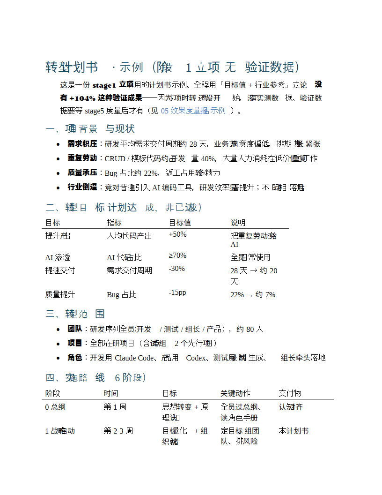
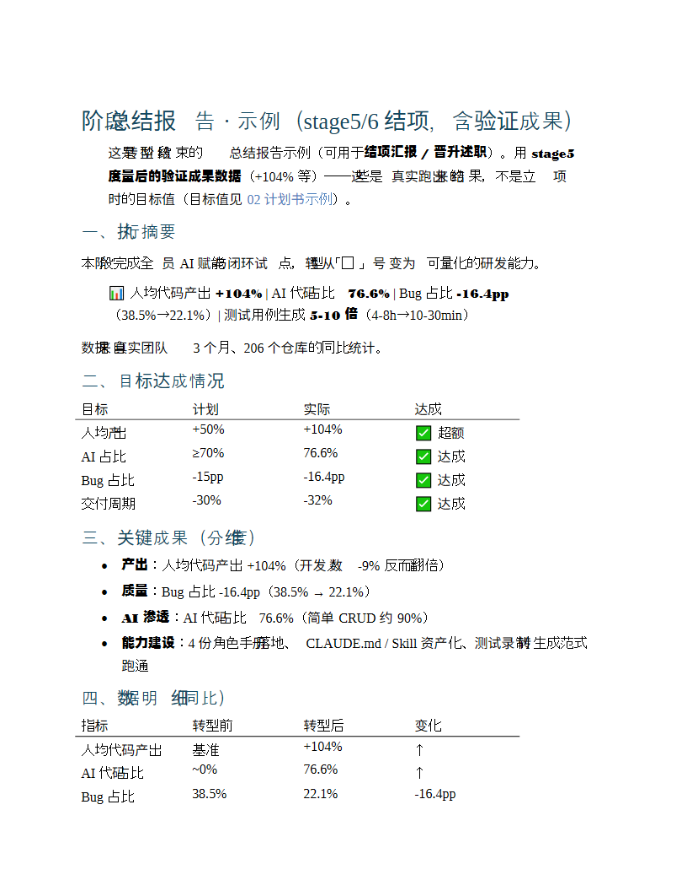

E12 · 5 分钟最小可走通 · 核心段
没有真实度量数据 ·
也能先跑通
手头没数据？占位数据先跑一遍
— tutorial E12 / 5 分钟最小可走通 —
E12 · step 1-2 · 打开模板 + 填占位
战略汇报 · 最小可走通
$
打开
01-战略汇报PPT.prompt.md
# 填占位数据（随便编两个数）
>
交付周期
28天
→
想压到
21天
>
Bug 率
22%
✓ 占位数据填好
— tutorial E12 / step 1-2 打开 + 填占位 —
E12 · step 3 · 粘到免费 AI
粘到免费 AI
$
粘到免费 AI
智谱清言 · 或 · 豆包（免费）
✓ 都行 · 任意免费 AI
— tutorial E12 / step 3 粘免费 AI —
E12 · step 4 · 三十秒出活
三十秒出活 · AI 输出
→
三十秒出活
AI 直接吐一份
结构齐全
的战略汇报
背景
目标
现状
行动
预期收益
✓ 全有


↑ 真实产出样式 · 转型计划书 / 阶段总结报告
— tutorial E12 / step 4 三十秒出活 —
E12 · 收尾 · 先跑通再补数据
先
跑通一遍
· 再补真实数据
第 1 步
跑通流程
→
第 2 步
补真实数据
— tutorial E12 / 5 分钟最小可走通 —